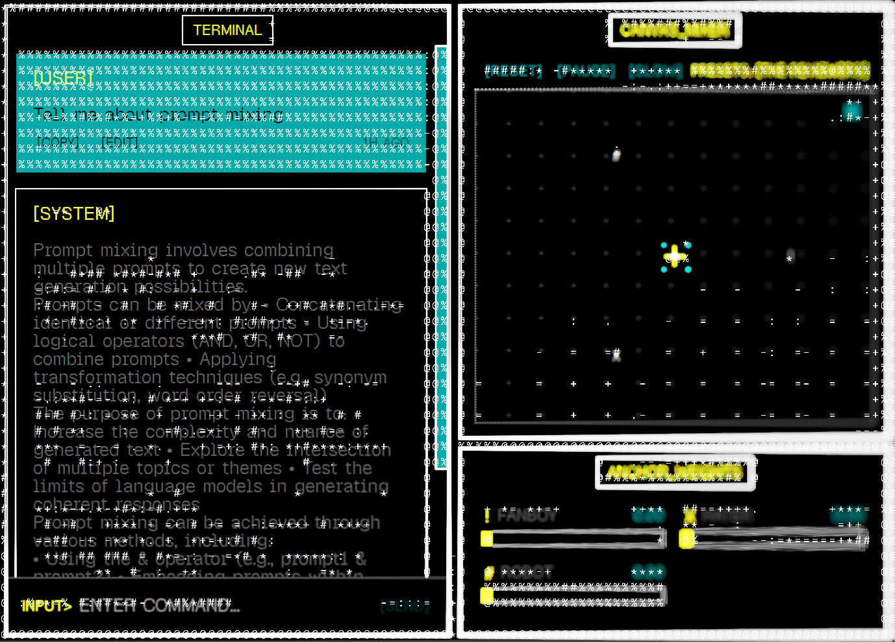
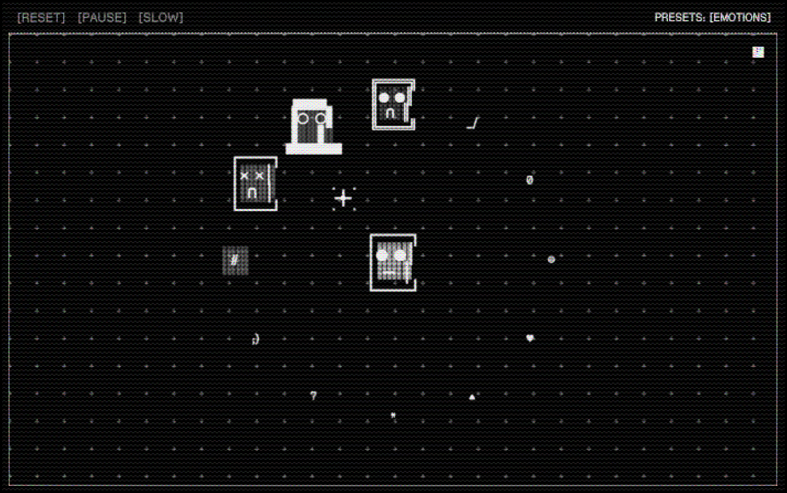
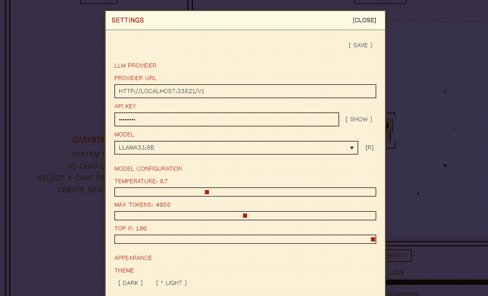

PROMPT_MIXER.EXE
> Brutalist LLM Operations Environment
_
CHAT_CORE
STATUS: ONLINE
Minimalist chat interface for prompt steering.

MIXER_CANVAS
STATUS: ACTIVE
2D pane for composing prompt out of individual components. Distance to anchor represents weight.

SYSTEM_CONFIG
SECURE_MODE
None of the data leaves your system. Bring your own LLM.
